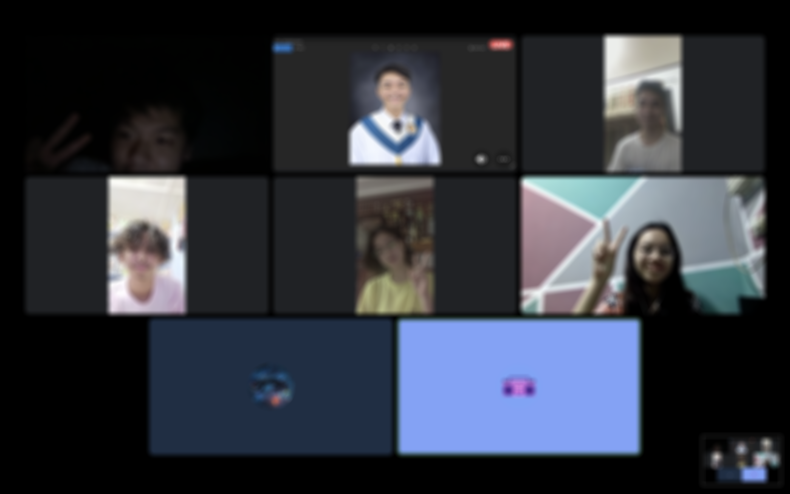
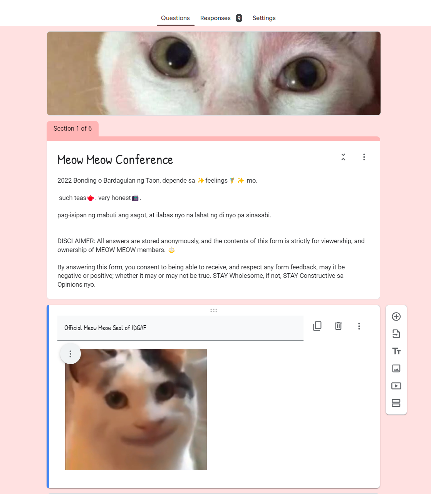

Konek
Making the Best of Friends (in the Internet)
The following are just not specific ways to make friends on the internet,
but also in real life. This article contains general principles to find
people that will actually stick around for long and possibly one of the
things that keeps you sane. Finding your best allies is key in finding a
version of yourself, more empowered than ever.
The General Rule of Thumb in Meeting People
People are allowed to:
- to leave you
- break up with you
- block and leave you
- not want to talk with you
- move on from you
- put their happiness before yours
- not want you in their life
- do what they want to become a better version of themselves.
And the same power also applies to YOU.
It may come as
rejection, but it is inevitable for people that are incompatible. Besides,
it’s a good thing because it is a way of letting go, and having room for
something that is better and fitting.
Be careful into holding people’s potential
This lesson was a hard pill for me. By means of this advice, watch
yourself when you are just clinging onto someone, of what it could be.
Being the only one initiating, cold conversation, and among other signs
are indicators that you are drifting. It can be for a lot of reasons, but
you cannot hold onto people’s potential. Knowing when to completely back
off is freeing yourself from thinking of just the possibilities and
looking down to reality.
Keeping the Ball Rolling: Take the Initiative
Do you want to enrich your social life? Take the effort to create one. It
will not happen in an instant as if someone can read our minds. It will be
done by our actions. It takes a single spark to start a fire, likewise, it
takes from a single initiation to create friendships and bond with people.
You can invite them to play some games together, talk/call, or just any
activity that you can share/do together with others. Taking an active
initiative is a primary ingredient in creating acquaintances and from that
you can nurture it to be long lasting friendships
Example: Meow meow
conference

These are the group of people who added me in a group chat of people
active in another conversation, we dabbled around each other and talked
about a lot of topics. An example of initiative I made is an activity we
did with some of my coursemates, it is a “conference” where we answer a
google form where we ask each other on how they vibe to specific members,
confess anything, or ask them certain questions, all of which are
anonymous. We reacted live to the answers in the google forms while in a
Discord Video Call, and we did this twice already. And from that it has
become a form of bonding between us.
Be Upfront: Honesty is a well-worth risk
You can’t be everything with everyone, and thus, there will always be
people that you will not vibe with, it will be worth your energy if you
dedicate your true self to the right people. You can strike controversial
conversations, or just be who you are. From that you will know if you
really vibe and enjoy being with another person. This is the phase where
you can move someone you just met, in real life or on the internet, from
being acquaintances who casually talk around to real friends where you can
be vulnerable yourself.
Finding your People
Here are the platforms I used in finding and where I found some good
internet friends. And key to a good social life is to find people you can
share yourself with and not change for them just to fit in. The people
where you can show specific corners/edges of yourself.
Discord
This app is a messaging platform unlike the traditional social media apps
like facebook or twitter. In my opinion, it’s more interactive and
feature-rich. It can be an instant messaging platform, listen and speak on
voice over channels, use bots that can anonymize messages, creating your
own community, and host some activities. I, myself, is a server admin for
computer science students in the University of the Philippines Baguio (2nd
year). On that server, we have late night talks (chismisan), games,
anonymous confessions, and networking with other students. Discord has
been a place for me where I can literally share my current activities, and
share them with others.
Reddit
In this social media platform, it is by far the most
diverse community you can find. From cats, to programming, to politics,
and anything imaginable (legal only), reddit has a community for it. Some
of the communities I joined are r/programminghumor, r/pytorch, r/memes,
r/ukraine, and r/philippines to name a few. You can find people to help in
a problem, share your memes, and be updated to the latest field news: the
possibilities are endless.
Bottled
The main catch of this app is that you can write a message in a bottle,
this bottle can end up in almost every country in the world. To Africa, to
the Americas, and Europe. You can also receive bottles in a message from
other people as well. This platform is where I found a lot of people from
around the world. And among the hundreds, literally, I have met and
chatted with only a single person that I have met that I have made past
acquaintance with to being a really good friend. From Turkey, the other
side of the world, he has given me insights into their daily life there
and has been a smart converser in a lot of stimulating controversial
topics, if not philosophical. And I’d say it’s well-worth on its own.
TL; DR (Too Long; Didn't Read.)
Finding people you can share yourself with is key in finding a better
version of yourself. With the best friendships you can bond with them, and
you will grow to become who you are.
With the following principles, this can help find your people. Firstly,
knowing that you have the power to leave if you deem them “unvibeable” is
key in making room for better people. Second, always taking initiative is
key in making momentum with the people you interact with. Third, honesty
is key in finding people that can actually stay, and rejection is
inevitable with incompatibility.
Lastly, some platforms where you can connect with people are Reddit,
Discord, or Bottled among other platforms you can try on. Just know where
to find the good ones for you.